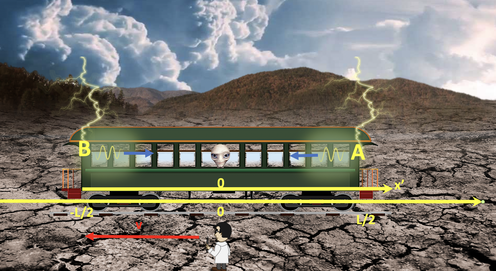

Forrige side🙂 🙁Et tankeeksperimentPADLET

Hvordan blir det nå? Vi har jo nøyaktig den samme situasjonen, vi bare regner fra et annet referansesystem. Da bør vi få samme svar. Gjør vi det? Toget står altså stille, bakken beveger seg med hastighet v bakover, lysstrålene fra lynnedslagene beveger seg med lysets hastighet. Hva skjer? P ser begge samtidigP ser A før BP ser B før A